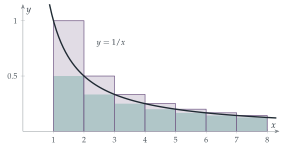

STEP II 1994、第13問
先に進む前に問題を読んでおこう。問題は STEP Support Programme の問題データベースにある： step.maths.org/questions/94-s2-q13
導入
あるサッカーのステッカーアルバムには集めるべきステッカーが \(600\) 種類あり、ステッカーは1枚ずつ無作為に売られている。アルバムを埋めるには、何枚買うことを見込めばよいだろうか。最初の数百枚はすぐに集まる。ほとんどすべてのステッカーが新しいからである。しかしアルバムが埋まってくるにつれて新しいステッカーは出にくくなり、最後の1枚だけで平均 \(600\) 回の購入が必要になる。合計はおよそ \(4200\) 枚、アルバムの大きさの7倍にもなる。
これがクーポン・コレクター問題（coupon collector’s problem）である。その答えは二つの考え方を組み合わせたものである。一つは成功するまでの待ち時間であり、もう一つは調和級数（harmonic series）\(1 + \frac12 + \frac13 + \cdots\) で、これは \(\ln n\) のように増大する。調和級数が発散（diverge）することは 第 2.3 節 で見た。ここでは、その増え方の遅さこそが、コレクションを完成させるために支払う代価となる。
取りかかる前に
各袋がそれぞれ独立に確率 \(p\) で新しいカードをくれるとき、最初の新しいカードが出るまで（その袋を含めて）開ける袋の数の期待値（expectation）はいくらか。
袋の数 \(X\) は幾何分布（geometric distribution）に従う：\(\mathrm{P}(X = k) = (1 - p)^{k-1}p\)。その期待値は \(\frac1p\) である。（これをすばやく確かめる一つの方法：\(\mathrm{E}(X) = 1 + (1 - p)\mathrm{E}(X)\)。1袋開けると、確率 \(1 - p\) で振り出しに戻るからである。）新しいカードが3回に1回出るなら、3袋待つことが見込まれる。
順を追って解く
段階 1 新しいカードを待つ
すでに \(r\) 種類の異なるカードを持っているとき、1袋から新しいカードが出る確率は、それまでの袋とは独立に \(\frac{n - r}{n}\) である。したがって、次の新しいカードが出るまでの袋の数の期待値は \[\frac{1}{(n - r)/n} = \frac{n}{n - r}. \qed\]
段階 2 和と積分を比べる
区間 \(r \leq x \leq r + 1\) において、\(\frac1x\) はどの二つの値の間にあるか。それは曲線の下の面積について何を教えてくれるか。
\(\frac1x\) は減少関数なので、\([r, r + 1]\) 上で \(\frac{1}{r+1} \leq \frac1x \leq \frac1r\) である。長さ \(1\) の区間で積分すると \[\frac{1}{r + 1} \leq \int_r^{r+1}\frac{\mathrm{d}x}{x} \leq \frac1r. \qed\] 図で見ると（図 9.11.1）、曲線の下の面積は、高さ \(\frac{1}{r+1}\) の長方形と高さ \(\frac1r\) の長方形の間に挟まれている。これらを \(r = 1\) から \(r = n - 1\) まで足し合わせると、積分はつながって \(\int_1^n\frac{\mathrm{d}x}{x} = \ln n\) となり、したがって \[\frac12 + \frac13 + \cdots + \frac1n \leq \ln n \leq 1 + \frac12 + \cdots + \frac{1}{n - 1}. \qed\]

段階 3 セットを完成させる
袋の総数は、最初のカード、2枚目の新しいカード、……のそれぞれを待つ時間の和である。その期待値はいくらか。
\(r\) 種類の異なるカードから \(r + 1\) 種類になるまでに必要な袋の数を \(X_r\) とする。総数は \(X_0 + X_1 + \cdots + X_{n-1}\) であり、期待値は足し合わせられるので、 \[\mathrm{E}(\text{総数}) = \sum_{r=0}^{n-1}\frac{n}{n - r} = n\Bigl(\frac1n + \frac{1}{n - 1} + \cdots + 1\Bigr) = nH_n,\] ここで \(H_n = 1 + \frac12 + \cdots + \frac1n\) は第 \(n\) 調和数（harmonic number）である。段階2より \(\ln n + \frac1n \leq H_n \leq \ln n + 1\) なので、\(n\) が大きいとき \(H_n\) はおよそ \(\ln n\) であり、私が食べることになると見込まれるのはおよそ \[n\ln n \text{ 袋}. \qed\]
振り返り
長い待ち時間を段階に分ける。 全体の時間は \(n\) 個の待ち時間に分かれ、そのそれぞれは単純な幾何分布型であった。
期待値は加法的である。 総数の分布は一度も必要とせず、各部分の期待値だけで済んだ。
和を積分と比べる。 図によって、値を求められない和が、誤差高々 \(1\) の対数に置き換わった。
背後にある数学
この評価はどれほど良いか
この比較はさらに精密にできる。図 9.11.1 において曲線と上側の長方形の間にある影の付いた隙間は、面積の合計が有限なので、\(H_n - \ln n\) はある極限に収束（converge）する。 \[\gamma = \lim_{n \to \infty}(H_n - \ln n) = 0.5772156649\ldots,\] これがオイラーの定数である。（\(\gamma\) が有理数かどうかは誰も知らない。）したがって袋の数の期待値は \(n\ln n + \gamma n + \frac12 + \cdots\) である。\(600\) 種類のステッカーアルバムでは \(600 \times (\ln 600 + 0.577) \approx 4185\) となり、これが導入で挙げた数値である。
時間はどこに費やされるのだろうか。各段階はきわめて不均等である。セットの前半を集めるのにかかるのはわずか約 \(n\ln 2 \approx 0.69n\) 袋であるのに対し、最後の1枚だけで平均 \(n\) 袋かかる。労力の大部分は最後の数枚に費やされる。コレクターたちがダブったカードを交換するのはこのためである。
集中
期待値は出発点にすぎない。総数はどれくらいばらつくのだろうか。総数の分散（variance）は \(\sum n r/(n - r)^2\) であり、これはおよそ \(\frac{\pi^2}{6}n^2\) である（第 2.4 節 の和 \(\sum 1/k^2 = \pi^2/6\) が現れる）。したがって標準偏差（standard deviation）はおよそ \(1.28n\) であり、\(n\) が大きいときには平均 \(n\ln n\) よりもずっと小さい。つまり総数はその平均の周りに集中（concentrated）している。ポール・エルデシュ（Paul Erdős）とアルフレッド・レーニ（Alfréd Rényi）は1961年に、より精密に、総数から \(n\ln n\) を引いて \(n\) で割ったものが極限分布をもつことを示した。それがガンベル分布（Gumbel distribution）であり、多数の確率的な量の最大値も記述する分布である（第 12.25 節）。
この問題はアブラーム・ド・モアブル（Abraham de Moivre、1712年）とラプラス（Laplace）にさかのぼる。現在ではさまざまな姿で現れる。システムのすべての部品を確かめるには、無作為なテストが何回必要か。ネットワーク上のランダムウォークがすべての頂点を訪れるまでどれくらいかかるか。コンピュータのハッシュ表を何回探索しなければならないか。いずれの場合も答えには \(n\ln n\) が現れる。生物学では、同じ計算によって、ゲノム全体を網羅するのに必要なシーケンシングの「リード」の数が見積もられる。
思考のスキル
和の期待値は期待値の和である。各部分が独立であるかどうかは関係ない。複雑な確率的な量を単純な部分に分けよ。
これは確率論で最も役に立つ事実の一つである。期待値の線形性（linearity of expectation）は、ここではクーポン・コレクター問題を \(n\) 個の幾何分布型の待ち時間に帰着させた。第 9.8 節 では、何の計算もなしに一致の個数の期待値を与えた。大学では、同じ考え方がアルゴリズムの解析や組合せ論（combinatorics）における確率的手法（probabilistic method）を支えている。
次の一歩
セットの半分。 \(\frac n2\) 種類の異なるカードを集めるのに必要な袋の数の期待値（\(n\) は偶数）が \(n(H_n - H_{n/2})\) であること、そしてこれがおよそ \(n\ln 2\) であることを示せ。
異なるカードの数。 \(k\) 袋を開けた後に持っている異なるカードの種類数の期待値が \(n\bigl(1 - (1 - \frac1n)^k\bigr)\) であることを示せ。（ヒント：各カードについて、それを持っている確率を求め、足し合わせよ。）セットの \(95\%\) を集めるにはおよそ何袋必要か。
二人のコレクター。 二人の子どもが同じセットを集めており、一方にとってのダブりが他方にとっては新しいカードになりうるように袋を共有する。両方のセットを完成させるのに必要な袋の数の期待値がおよそ \(n(\ln n + \ln\ln n)\) であることを示せ。（これは難しい。まず、それが \(2n\ln n\) よりずっと小さいことを納得せよ。）
より精密な評価。 長方形の代わりに台形公式（trapezium rule）の図を用いて、\(H_n - \ln n\) が減少し、\(H_n - \ln n - \frac{1}{2n}\) が増加することを示せ。小さな \(n\) の値から \(0.5 < \gamma < 0.7\) を導け。
さらに学ぶために
Geoffrey Grimmett & David Stirzaker, One Thousand Exercises in Probability（Oxford University Press）。クーポン・コレクター問題のさまざまな変種が収められている。
Julian Havil, Gamma: Exploring Euler’s Constant（Princeton University Press）。\(\gamma\) と調和級数のすべてを、親しみやすい水準で解説している。
Michael Mitzenmacher & Eli Upfal, Probability and Computing（Cambridge University Press）。クーポン・コレクター問題と、そのコンピュータ科学における応用。